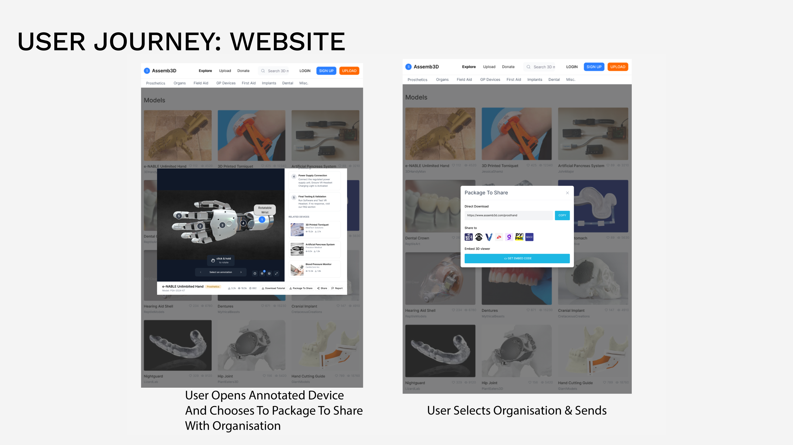

Assemb 3D

Intro
Assemb3D is a medical design project focused on improving prosthetic assembly learning through clearer, stepwise guidance.
The concept combines web and VR touchpoints to help users understand part order, positioning, and connection with less ambiguity.
The goal is a faster and more accessible learning pathway for real-world assembly and repair.
My Role
2026
Year
UX/Med
Role
Lead
Position
The Problem

Requiring A Prosthetic Is Bad Enough, Without The Additional Barriers
- In Ireland, public provision typically covers one initial prosthetic, creating major cost pressure as users grow and require replacements.
- Typical pathways can take up to 10 months from application to delivery.
- Nearly half of patients reject their first HSE prosthetic within the first year, highlighting a gap between provision and usable outcomes.
The Moment

How Can We Help Overcome Barriers Of Cost And Time For Amputees?
- Existing 3D-print solutions are promising but still institution-led and difficult for non-technical users to adopt at home.
- Benchmarked tools such as e-NABLE’s Unlimited Hand reduce manufacturing cost but still leave a steep assembly learning curve.
- In testing, users struggled to complete assembly after watching existing tutorials, revealing a clear guidance and comprehension gap.
Where Does Assemb3D Step In?

User Journey: Website


Clinical Learning Rationale
Why VR Over Video?
- The interaction model prioritises learning-by-doing, which supports retention and confidence in procedural tasks.
- The flow presents one action at a time, highlights the next correct component, and confirms progress with visual/haptic feedback.
- Users can restart from the step they failed on, reducing cognitive load and improving task completion compared with linear tutorials.